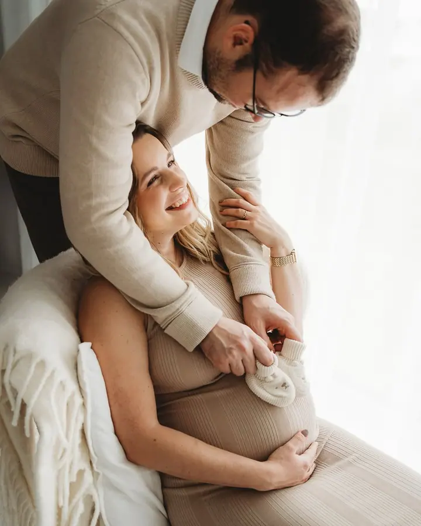
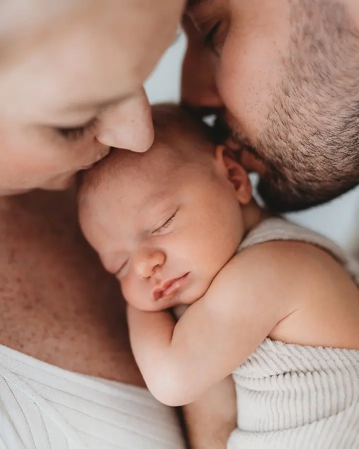
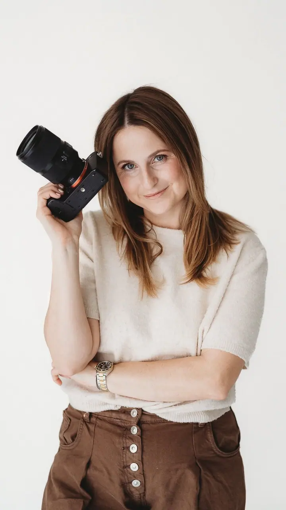

Těhotenské focení
Chci, aby se každá budoucí maminka cítila krásná, sebevědomá a přirozená. Žádné strnulé pózy, jen opravdové emoce, denní světlo a jemný minimalismus, buď venku, nebo v ateliéru.

Jmenuji se Veronika Hošek a fotím těhotenství, novorozená miminka i dětské narozeniny v Praze a okolí. Většina focení probíhá v mém Líbezném fotostudiu v Líbeznicích, kd…
Rezervovat termínJsem rodinná fotografka a máma. Specializuji se na těhotenské, newborn, narozeninové a rodinné focení v Praze a okolí. Protože vím, jaké emoce přinášejí první dny s miminkem, focení u mě probíhá v klidu a s ohledem na potřeby celé rodiny.


Fotím hlavně ve svém Líbezném fotostudiu v Líbeznicích (Praha-východ). Pracuji s denním světlem, které dodává fotkám jemnost. Můj styl je minimalistický, čistý a elegantní, bez zbytečných rekvizit, aby hlavní roli hrály emoce a vy.
Nemusíte se bát nepřirozených póz ani strojených úsměvů. Celým focením vás provedu tak, abyste se cítili uvolněně. Styling spolu proberete předem se mnou a oblečení si můžete půjčit z mého klientského šatníku.
Co fotím
Chci, aby se každá budoucí maminka cítila krásná, sebevědomá a přirozená. Žádné strnulé pózy, jen opravdové emoce, denní světlo a jemný minimalismus, buď venku, nebo v ateliéru.
Volím přirozenost: náruč rodičů, pohledy plné lásky a něžné doteky. Tempo focení se plně řídí miminkem a vždy si vyhradím čas na prstíky, nožičky a další drobné detaily.
Hlavní hvězdou je oslavenec, ale patří k tomu i rodinné fotky. O výzdobu se postarám já, včetně heliového balónku ve tvaru čísla.
Focení v uvolněné atmosféře, které si užijete vy i vaše děti. Zachytím lásku a propojení mezi vámi, aby vznikly vzpomínky na celý život.
Postup
Napíšete mi, o jaké focení máte zájem, a domluvíme se na termínu a místě, tedy ateliér, nebo exteriér.
Společně vybereme oblečení, které bude odpovídat vašemu vkusu. Můžete si půjčit kousky z mého klientského šatníku a u těhotenského focení si přiobjednat i vizážistku.
Fotím při denním světle v Líbezném fotostudiu nebo venku. Lehce vás napózuji, ale nejradši zachycuji přirozené momenty. U miminek se tempo řídí jen jimi.
Fotky si vyberete z online náhledové galerie. Upravím je jemnou retuší s přirozenými barvami a dostanete je v elektronické podobě v tiskové kvalitě.
Otázky
Těhotenské focení venku stojí 4 800 Kč, v Líbezném fotostudiu 5 800 Kč a s vizáží 8 800 Kč. Newborn focení stojí 6 800 Kč, narozeninové 6 300 Kč. V každém balíčku je 15 fotografií v elektronické podobě, ceník platí od 1. 12. 2025.
Univerzální odpověď neexistuje, protože každá žena prožívá těhotenství jinak. Rády spolu najdeme období, kdy se budete cítit nejlépe. Víc tipů najdete na mém blogu.
Nemusíte. Pokud se na focení hned po odchodu z porodnice necítíte, nic se neděje. Ráda vás s vaším miminkem vyfotím i později.
Styling spolu proberete předem. Oblečení si můžete půjčit z mého klientského šatníku, který je vybraný pro různé věkové kategorie i styly.